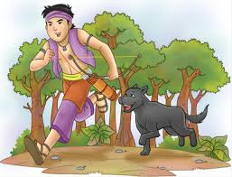

Cerita Legenda Sangkuriang
Awal Kisah
Dayang Sumbi adalah seorang wanita cantik yang hidup di sebuah desa di tanah Sunda. Ia memiliki seorang anak laki-laki bernama Sangkuriang yang sangat ia sayangi.

Konflik
Sangkuriang membunuh anjing peliharaan ibunya yang bernama Tumang secara tidak sengaja dan diusir dari desa.
Tragedi
Setelah bertahun-tahun, Sangkuriang kembali dan bertemu dengan ibunya tanpa mengetahui identitas masing-masing. Dayang Sumbi memberikan syarat mustahil agar Sangkuriang tidak menikahinya.

Akhir
Sangkuriang gagal memenuhi syarat tersebut dan marah. Ia menendang perahu yang dibuatnya hingga terbalik dan menjadi Gunung Tangkuban Perahu, serta terbentuk Danau Bandung.